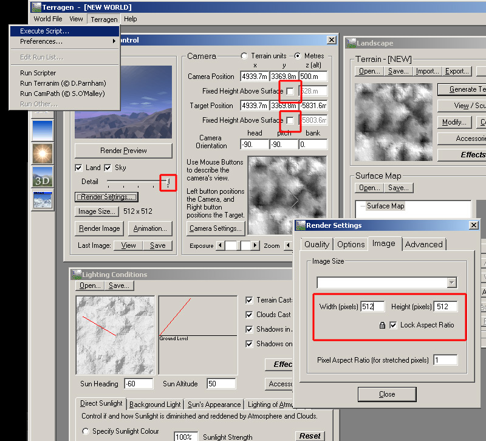
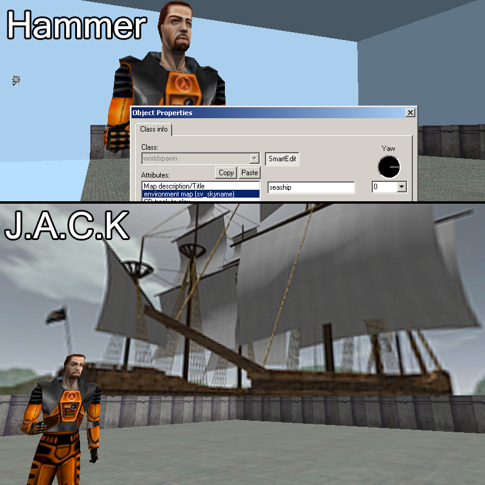

GoldSrc Map Texture Tutorial
PART 8: Custom Skies
Custom skies are some of the trickiest assets to create so I am including multiple methods with and without a 3D editor. First we need to understand how a sky works in GoldSrc: A sky is composed of six 24bit targa 256X256 pixel images that come together to create a environment map. This type of map is known as a "cubic" map. The cubic layout is as follows
FT=Front
BK=Back
RT=Right
LF-Left
UP=UP
DN=Down
Here is a gif showing how it all comes together:
I will be showing 5 different approaches to sky creation, while this is the longest section in my texture tutorial series I encourage you to review them all before starting to see what works for you.
Method 1: Terragen Classic
The Terragen method gives fast and good results quickly. This is because the atmosphere, lighting, and terrain is easily generated and all thats needed to render the cubic skybox is a script. My tutorial will only cover basic setup and export for goldsrc, for more info and tutorials on terrain generation check out these tutorials and guides:
Terragen Classic Guide (webarchive link)
Terragen Classic Guide (offline ZIP backup)
Terragen Tutorial by Eric DeGiuli (webarchive link)
Terragen Tutorial by Carol Brooksbank
1) First, download Terragen Classic here and install. Open up Terragen Classic and click the Generate Terrain button. I used default settings on the open Terrain Genesis window. For some quick changes press the View/Sculpt button. This will give you a B&W image of the terrain map and will allow you to "paint" higher or lower much like painting displacement maps in Source Engine Hammer.
2) When satisfied with your painting, click render preview or the 3D button to preview how it looks. Now start preparing for final render by first sliding the detail slider to the right, then setting the render settings image size to 512X512. Uncheck the fixed height boxes. Position your camera in the final place via the mini map or 3D button. Change the altitude of the camera by changing the "Z" meters (i have set to 500 for this one, but for most skyboxes id suggest a lower altitude). Create a folder on your C drive and name it terragen. Go to Exectute script in the Terragen menu. Open this script here. This script has the output directory set to the terragen folder on C. You can edit the script with notepad to change the output directory and name.

3) Terragen will now render out 6 images. When done they will be BMPs called "mysky"in the directory as the goldsrcskybox.tgs script specified. Now the files need to be renamed so they can be ready to converted to skyreadable format. You can either manually rename the files so they are as so:
mysky0002.bmp to myskylf.bmp
mysky0003.bmp to myskyup.bmp
mysky0004.bmp to myskybk.bmp
mysky0005.bmp to myskyrt.bmp
mysky0006.bmp to myskydn.bmp
Or you can create a simple windows .bat renaming script.
4)Open IRFANVIEW and go to file>Batch Conversion/Rename. Select "Batch conversion - Rename result files", and set the output format to TGA. Select the 6 BMPs and Add them to the input files. Set your output directory to:
C:\Program Files (x86)\Steam\steamapps\common\Half-Life\valve\gfx\env\
4)Click Advanced under the file type and check RESIZE. Set to 256X256, and set resample function. Check Sharpen filter; 15 is a pretty good number, but you can play with this. Click ok to leave the advanced window then press Start Batch button at bottom right.
5)Once the batch has run and converted the files, open up hammer. Then under Map>Map Properties>environment map (sv skyname). Type in the base name of your sky there so for this one it is "amars". If you are using J.A.C.K, you can select a roll out menu to choose the sky and have a live preview on all textures with the sky tool texture.
6)Compile the map and observe the final sky.
Method 2: Skypaint
Skypaint is an old and rather crude looking program but it is still quite useful not only as an easy editor that hooks into photoshop, but it is also useful for previewing existing skyboxes (under "open..." set the type to "QuakeII Targa"). In this tutorial we will be making an Equirectangular image for the 360 degree view. This kind of projection image is much easier to work with than cubic layout since it is a single image instead of 6.
Skypaint site is here: www.skypaint.com
Mirror web archive download is here: Skypaint Download Mirror
1)Create a looping panorama image. Here I have taken a public domain 360 panorama of mars and added an atmospheric processor with clouds. Its best to edit at high resolution. Use offset filter to check if the image loops from side to side. I have left space at the top and the bottom of the image which will be reserved for pole details.
2)When done, save a copy out for backup purposes and then take your image and resize it to square aspect ratio. I have extended the sky slightly.
3)The following involves many steps so this will be as a gif:
a)Rescale your image to 1:1 square aspect ratio
b)Make 2 copies of your image layer
c)Run Filter>Distort>Polar Co-ordinates (rectangular to polar type)
d)Paint in your sky details
e)Run Filter>Distort>Polar Co-ordinates (polar to rectangular type)
f)Create a layer mask and paint the mask off with the gradient tool
g)Hide the layer you just worked on and select the 2nd copy
h)Select all, then edit>transform>rotate 180
i)Run Filter>Distort>Polar Co-ordinates (rectangular to polar type)
j)Paint in your ground details
k)Run Filter>Distort>Polar Co-ordinates (polar to rectangular type)
l)Create a layer mask and paint the mask off with the gradient tool
m)Save image as 24bit BMP (if your image is under 2048X2048, then upscale it)
4)Open SkyPaint, and go to "open..." or click the folder icon. Check the open type to "LivePicture, SPHERE/CYLINDER,BMP".
Click and drag the mouse in the viewport to observe the sky. In the view menu you can choose set views.
5)While this step is optional, it is important to show off the main feature of skypaint. If you haven't set on install already, go into Skypaint Preferences and set the path to your paint program EXE.
Choose an area of your view to paint and click the paint button. You will be prompted with a canvas size and FOV readout. Default settings are pretty good. However, keep in mind higher canvas size/FOV will be giving you more space to paint but will result in more distortions/blurring of your final image.
6)When "paint this view" is activated, photoshop will launch with the image you chose. Be sure photoshop is not already open when clicking paint this view or your edited image may not be sent back to SkyPaint when done!
Paint your view and when you are done be sure to flatten all layers. When done save the image and close photoshop. If this worked then skypaint will open back up again with the image that you just edited.
7)When done, go to save as and choose a short filename for your skybox. Most importantly, set the type as "QuakeII, Targa".
8)Open IRFANVIEW, Go to file>Batch Conversion and set Work as To "Batch conversion - Rename result files"and "Add" your 6 newly saved images to the batch process. Set your output format to TGA, and check Use advanced options Set your Output directory to:
C:\Program Files (x86)\Steam\steamapps\common\Half-Life\valve\gfx\env\
9)Click Advanced under the file type and check RESIZE. Set to 256X256, and set resample function. Check Sharpen filter; 15 is a pretty good number, but you can play with this.
10)Start the batch, and now go to hammer or J.A.C.K. Under Map>Map Properties>environment map (sv skyname). Type in the base name of your sky there so for this one it is "amars". If you are using J.A.C.K, you can select a roll out menu to choose the sky and have a live preview on all textures with the sky tool texture.
11)Observe the sky in action.
Method 3: Blender
In this method we will use Blender to render out a scene as an eqirectangular image. Note: This tutorial will only cover the image rendering and is not a 3d modelling tutorial.
1)With Cycles Render selected as your render engine, Add a camera in your scene. Make sure the rotation properties of the camera is X:90 Y:0 Z:0. With the camera selected go to properties click the "Panorama" tab under lens and then change type "Equirectangular".
2)This is an optional step but just to show how ive got my background set up I have a panoramic image made from the photoshop technique I showed earlier. To add one of these to your background go to the world tab, and go to surface menu. To the right of "color" press the dot and select "Environment texture" and choose a Equirectangular image you have or made from photoshop.
3)Click the render tab and set your resolution to 2048X2048 and under output set as BMP. Go to render image and you should see your image render. Once its complete press F3 to bring up the save menu and save out your BMP to your desired directory.
4)Just like in the previous skypaint method and go to "open..." or click the folder icon. Check the open type to "LivePicture, SPHERE/CYLINDER,BMP". Preview the skybox and if needed send to photoshop. Go to save as and choose a short filename for your skybox. Most importantly, set the type as "QuakeII, Targa".
8)Open IRFANVIEW, Go to file>Batch Conversion and set Work as To "Batch conversion - Rename result files"and "Add" your 6 newly saved images to the batch process. Set your output format to TGA, and check Use advanced options Set your Output directory to:
C:\Program Files (x86)\Steam\steamapps\common\Half-Life\valve\gfx\env\
9)Click Advanced under the file type and check RESIZE. Set to 256X256, and set resample function. Check Sharpen filter; 15 is a pretty good number, but you can play with this.
10)Start the batch, and now go to hammer or J.A.C.K. Under Map>Map Properties>environment map (sv skyname). Type in the base name of your sky there so for this one it is "neon". If you are using J.A.C.K, you can select a roll out menu to choose the sky and have a live preview on all textures with the sky tool texture.
11)Observe the sky in action.
Method 4: 3DSMax Sky
In this method we will use 3dsmax to render out a scene as an cubic images. Note: This tutorial will only cover the image rendering and is not a 3d modelling tutorial.
1) Create a box with cube creation type. Place it in the center of your scene as this will act as your cubic camera.
2) Go to rendering > environment menu and choose an image for your environment map. I have created a simple sky and clouds eqirectangular image in photoshop just like in the skypaint method earlier.
3) Bring up the Material editor in compact mode and click the "Get Material" button and select the environment texture you just assigned.
4) With this texture added to the editor change the environ type to "Spherical Environment".
5) Select a new blank material in the editor. Check the reflection box and click the map to add a map. Select "Reflect/Refract" as your map type.
6) With the Reflect/Refract paramaters menu change source to "From File", then set the size to 512. The click "To file" and this will bring up a save dialogue box. Save as a .tga (24bit).
7) Click the "Pick Object and Render Maps" button and choose your cube. 3DSMax will now render out 6 512X512 images and may take some time depending on the complexity of your scene.

8) Open Skypaint and set the open type to "3DStudio, Targa" and open your trees image.
9) Skypaint will now load the 6 images into the preview. Look around and check for errors. If needed send to photoshop paint just like in the earlier skypaint tutorial.
10) Save the skybox with a different name than the max renders, and save as type "QuakeII, Targa"
11)Open IRFANVIEW, Go to file>Batch Conversion and set Work as To "Batch conversion - Rename result files"and "Add" your 6 newly saved images to the batch process. Set your output format to TGA, and check Use advanced options Set your Output directory to:
C:\Program Files (x86)\Steam\steamapps\common\Half-Life\valve\gfx\env\
12)Click Advanced under the file type and check RESIZE. Set to 256X256, and set resample function. Check Sharpen filter; 15 is a pretty good number, but you can play with this.
13)Start the batch, and now go to hammer or J.A.C.K. Under Map>Map Properties>environment map (sv skyname). Type in the base name of your sky there so for this one it is "treesky". If you are using J.A.C.K, you can select a roll out menu to choose the sky and have a live preview on all textures with the sky tool texture.
14)Observe the sky in action.
Method 5: Source Engine Cubemap Capture
In this method we will use any Source engine game to capture a cubic set of images from the console.
1) First turn off HDR in your Video - Advanced settings.
2) Load up a map, open the console with "~" and type & enter: sv_cheats 1, noclip and mat_envmaptgasize 512. Then with noclip you can position yourself at any point in the map. Once in position type in "envmap". Once you hit enter a series of images will flash on the upper left.
3) Close the game and navigate to the base game directory and you will find a folder called "cubemap_screenshots". Here is your cubic images, now open them with Skypaint in "QuakeII, Targa" mode.
4) Verify your sky and send to photoshop paint if desired and save out the sky as "QuakeII, Targa". If you have no edits to make, you can skip saving with skypaint and just open the tga's in IRFANVIEW because they are already in correct cubic formatting due to source envmap using the same rotations/names.
11)Open IRFANVIEW, Go to file>Batch Conversion and set Work as To "Batch conversion - Rename result files"and "Add" your 6 newly saved images to the batch process. Set your output format to TGA, and check Use advanced options Set your Output directory to:
C:\Program Files (x86)\Steam\steamapps\common\Half-Life\valve\gfx\env\
12)Click Advanced under the file type and check RESIZE. Set to 256X256, and set resample function. Check Sharpen filter; 15 is a pretty good number, but you can play with this.
13)Start the batch, and now go to hammer or J.A.C.K. Under Map>Map Properties>environment map (sv skyname). Type in the base name of your sky there so for this one it is "seaship". If you are using J.A.C.K, you can select a roll out menu to choose the sky and have a live preview on all textures with the sky tool texture.

14)Observe the sky in action.